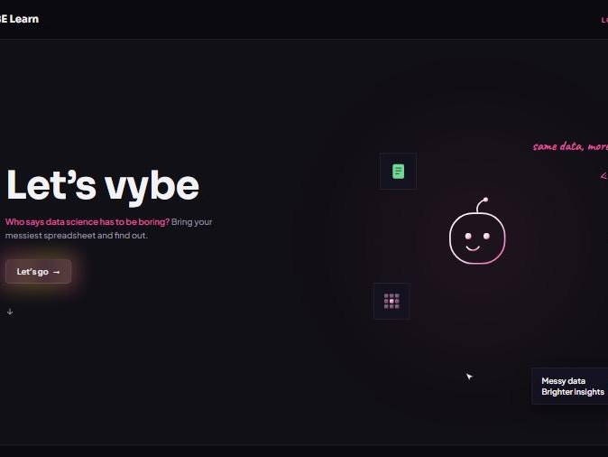

Project
ConnectED
A campus networking platform that helps students find clubs, project teams and events that match their interests, skills and goals.
HTML · CSS · JavaScript · Vercel
Sep 2025 · IETE-SF National Level Hackathon
40+ teams walked in. One walked out with first prize. That was us.
campus solutions trackProject
A campus networking platform that helps students find clubs, project teams and events that match their interests, skills and goals.
HTML · CSS · JavaScript · Vercel
Project
A campus management platform connecting students, faculty and admins: dashboards, timetables, resource booking and role-based portals.
Next.js · TypeScript · Vercel
Major project
A multi-agent AI tutor that teaches data science on your own dataset, at your level, toward your goal. Its agent checks its own work: when its first fix distorted the data by 21%, it threw the fix out and switched to KNN, which brought it down to 7.6%.
Python · scikit-learn · Multi-agent LLMs
